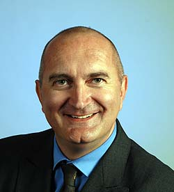
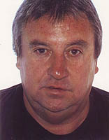

Matthias Kopp -Ortsvorsteher-
wurde am 02.04.1966 in Hagenow geboren. Er ist verheiratet und hat zwei Söhne und eine Tochter. Matthias Kopp wohnt seit 1967 in Leipzig und ist seit 1997 in Hartmannsdorf ansässig. Sein Hochschulstudium an der Humboldtuniversität zu Berlin schloss er 1993 erfolgreich als Diplomfischereiingenieur ab. Anschließend war er im Bereich Gewässersanierung und bei der bundeseigenen Grundstücksverwaltung BVVG beschäftigt. Heute arbeitet er als Leiter der Gewässerwirtschaft im Anglerverband Leipzig e.V. Matthias Kopp wurde 2009 in den Ortschaftsrat gewählt und ist seit 2012 als Ortsvorsteher tätig. Telefonisch ist er erreichbar unter: 0170-8228356

Karsten Klitscher -Stellvertreter-
wurde am 02.04.65 in Kassel geboren. Er ist verheiratet und hat einen Sohn. Er wohnt seit 1992 in Leipzig und seit 2004 im Ortsteil Hartmannsdorf. Nach Abitur durchlief er eine Berufsausbildung zum Speditionskaufmann. Anschließend absolvierte er eine Weiterbildung zum Verkehrsfachwirt und arbeitet heute erfolgreich als Prokurist eines mittelständischen Speditionsunternehmens. Karsten Klitscher trat 1979 der Jungen Union bei und ist seit 1983 Mitglied der CDU. Karsten Klitscher wurde 2009 in den Ortschaftsrat gewählt und ist einer der zwei Stellvertreter des Ortsvorstehers. Telefonisch erreichbar unter: 0176 -18361414Gregor von Wilcke - Stellvertreter
wurde 1978 im vogtländischen Rodewisch geboren. Seit 2013 lebt er mit seiner Ehefrau und Tochter im Ortsteil Knauntnaundorf. Neben der Ausbildung zum Bankkaufmann hat er ein Hochschulstudium in Politikwissenschaft, Soziologie und Sozial- und Wirtschaftsgeographie an der TU-Chemnitz abgeschlossen.Nach mehrjähriger Tätigkeit für einen Abgeordneten des Deutschen Bundestages ist er als Rechtlicher Betreuer freiberuflich tätig. Gregor von Wilcke wurde 2014 als Kandidat der Wählervereinigung Knauntnaundorf-Hartmannsdorf-Rehbach erstmals in den Ortschaftsrat gewählt.
Unter 0176-81631661 ist er telefonisch erreichbar.

Von September 2009 bis 2011 war er Ortsvorsteher im Ortschaftsrat Hartmannsdorf / Knautnaundorf / Rehbach. Seitdem ist er weitherhin als gewählter Vertreter Rehbachs im Otschaftsraat aktiv. Er ist erreichbar unter 0172-9617036.
Matthias Steinberg
wurde 1948 geboren, ist verheiratet und hat drei erwachsene Kinder. Als Bezirksschornsteinfeger für Leipzig Süd, der Stadt Markranstädt und weiteren sieben, umliegenden Ortschaften hatte er stets einen unmittelbaren Kontakt zur Bevölkerung.Von September 2009 bis 2011 war er Ortsvorsteher im Ortschaftsrat Hartmannsdorf / Knautnaundorf / Rehbach. Seitdem ist er weitherhin als gewählter Vertreter Rehbachs im Otschaftsraat aktiv. Er ist erreichbar unter 0172-9617036.